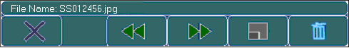

|
|
|
|
|
|
|
|
The Image Capture Viewer allows you to display screen snapshots and video snapshots saved in the JPEG file format on the panel. For a list of target machines that support the Image Capture Viewer, see Appendix 5, Hardware Specifications.
From the main menu, click Draw, click Image, and then select Image Capture Viewer.
On the panel, draw the Image Capture Viewer and left-click to complete the drawing.
In the Image Capture Viewer dialog box, configure the JPEG Viewer settings as required by your project.
The following table describes the Image Capture Viewer properties in the dialog box and in the Property Inspector.
|
Property |
Description |
|
Name |
The object's name. Whenever an object is created, a default name is generated. When renaming an object, its name must be unique within the target, must contain no more than 32 valid characters, and must follow the naming conventions. For details, see Appendix 9, Naming Conventions. |
|
Initial Startup Display |
This selection allows you to define an image that will display in the Viewer when the user goes to a panel the Viewer is on. Make one of the following selections:
|
|
Display Popup Keypad |
Enables the following Image Capture Viewer keypad to display when you touch the viewing object at Runtime.  The keypad provides you with the following functions:
|
|
Allow Deletion |
Enables you to delete the JPEG image using the Delete function in the Image Capture Viewer keypad. |
|
Security Level |
Sets the Security Level for the Image Capture Viewer. Once a Security Level is defined, only users with the correct security level can access the JPEG Viewer's functions. For more information on security levels, see Section 4.8.2.1, Protecting Panels and Parts from Unauthorized Users.
|
|
Save Defaults |
The forward-arrow button |
|
Restore Defaults |
The back-arrow button |
|
Placeholder |
You can assign a placeholder in any property that requires a variable definition. Click the ellipsis to open the Placeholders dialog box and edit the variable placeholder for the object. The dialog box only displays if you had set up a placeholder for the object. For more information on placeholders, see Section 21.2.4, Working with Variable Placeholders. |

You can create a switch operation to control the Image Capture Viewer. For more information, see Section 9.5.16, Image Capture Viewer Operations.